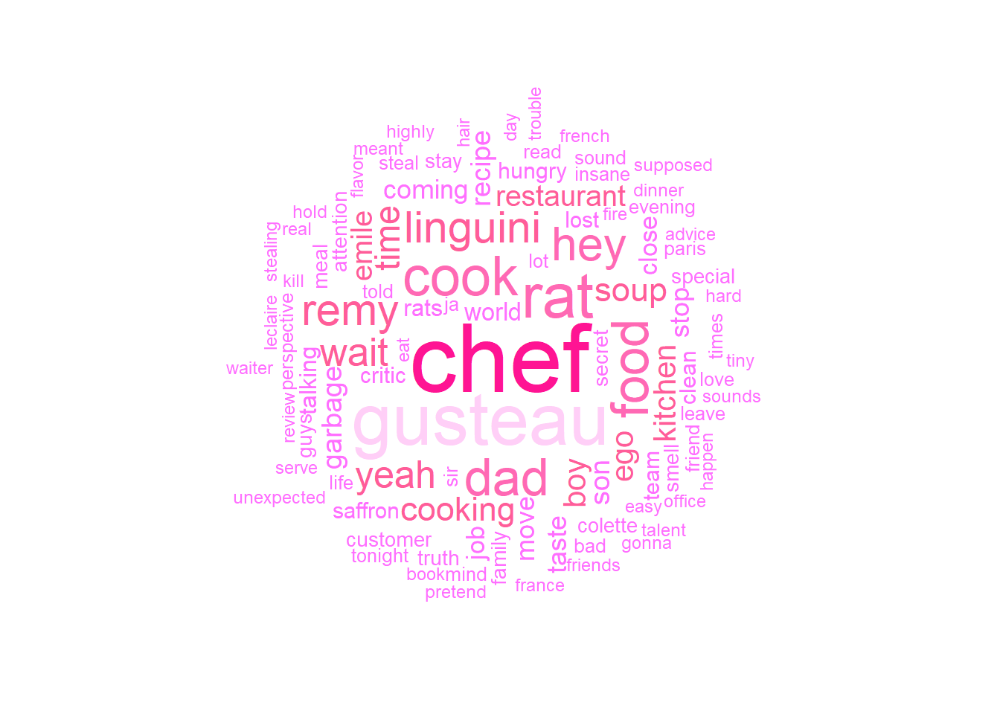
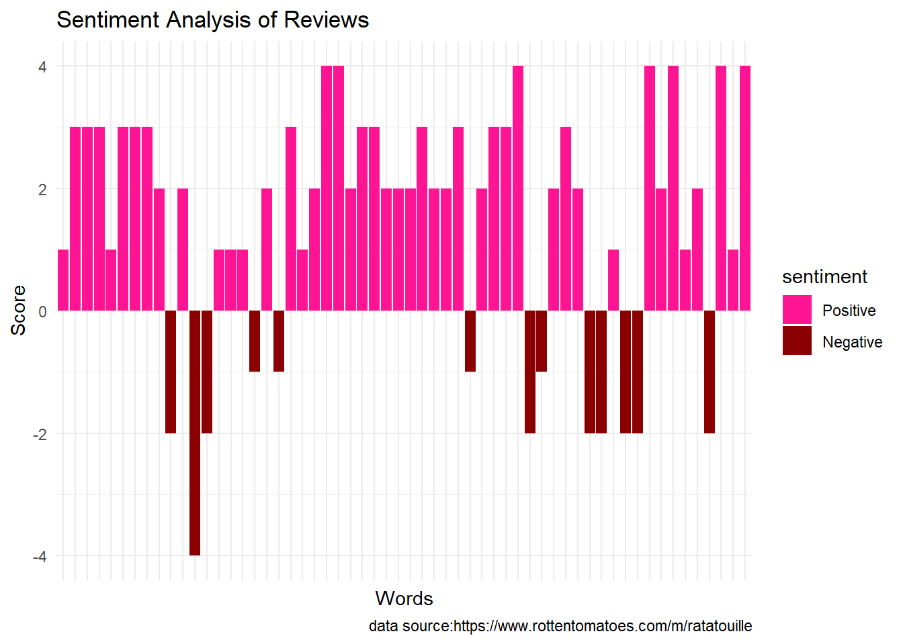
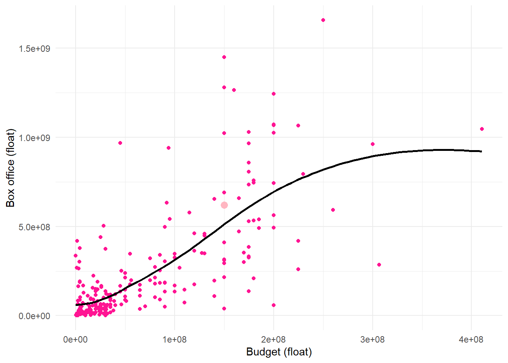

Strings & Regular Expressions
Ratatouille
Did you know that in the Ratatouille movie, only 7,526 words were spoken? According to a Reddit post, the average screenplay has about 22,000 words (although Reddit is definitely not the most reliable source so this may not be totally accurate). Within those 7,526 words in Ratatouille, there were 2,193 distinct words spoken. This may seem like very few, but any Ratatouille lover knows how impactful those 2,193 different words were.
The above graph is a sentiment analysis of all of the words in Ratatouille. To find this, I used a sentiment library that ranks common words on a scale of -3 to 3, respectively negative to positive sentiment. I inner joined that dataset with my dataset of Ratatouille words to find their sentiments. We can see that a little over half of the Ratatouille words have positive connotations. This makes sense since it is overall a happy movie, although there is a lot of yelling from the head chef which would contribute to the good chunk of negativity. This graph has the words in order of appearance, so the left is the beginning of the movie, and as the movie progresses, we move to the right. We can see areas where the movie was more positive, and also areas that were more negative.
Below we see a table with the 10 most used words in Ratatouille. To do this, I removed the stop words (common words that generally don’t hold significance like “the”) from the data and I ranked the leftover words by amount used. Unsurprisingly, we see that 3 of the words have to do with food, as it is a food movie. We also see that names/nicknames come up a lot, with Remy, Gusteau, Linguini and dad all making appearances. Rat is also fairly expected since the whole plot of the movie is about a rat. Somewhat surprising, however, is the word hey. I would think that it would be considered a stop word, however the set of stop words I used did not include it.
| word | chef | gusteau | rat | cook | dad | food | hey | linguini | remy | wait |
| n | 55 | 40 | 33 | 28 | 26 | 26 | 23 | 21 | 21 | 18 |
While seeing these words is nice to get a taste for what the most used words are, it is also nice to have a more visual representation. Below is a word cloud containing the top 100 used words from the move. The bigger the word, the more it was used. By using a diagram like this, we can more easily see which words are the most commonly found, and the color codings show up what other words were used a similar amount of times.

Now that we know which words were used the most in Ratatouille, we can look into where in the movie these words show up. For the next graph, I looked into the top 5 words and where they are positioned in comparison to all other words in the movie. We can see that “dad” was used mostly in 3 separate areas of the movie, whereas “chef” was used pretty regularly throughout.
Anyone who has watched Ratatouille surely understands that it is a masterpiece, but what do people really think about the film? To find this out, we can look to the master site of movie reviews, Rotten Tomatoes. On Rotten Tomatoes, Ratatouille scores a 96% on the Tomatometer (critic reviews) and an 87% for audience ratings. It is clear that the critics are the true experts in what makes a good movie! The graph below shows a sentiment analysis of words from all reviews (critic and audience).

We say that Ratatouille has, by far, had a positive impact on watchers. However, it leaves one to wonder what some of the negative reviews had to say about the movie. The negatively connotated words in these reviews are “cry”, “bored”, “hard”, “struggling”, “critic”, and “leave”. Many of these words are not inherently negative, and would depend on the context.
| word | reviews |
|---|---|
| cry | like the snooty restaurant <critic> anton ego (voiced by peter o'toole), we enter ratatouille thinking we've tasted it all, and we leave hoping for seconds. |
| bored | like the snooty restaurant critic anton ego (voiced by peter o'toole), we enter ratatouille thinking we've tasted it all, and we <leave> hoping for seconds. |
| hard | like the snooty restaurant <critic> anton ego (voiced by peter o'toole), we enter ratatouille thinking we've tasted it all, and we leave hoping for seconds. |
| struggling | like the snooty restaurant critic anton ego (voiced by peter o'toole), we enter ratatouille thinking we've tasted it all, and we <leave> hoping for seconds. |
| critic | like the snooty restaurant <critic> anton ego (voiced by peter o'toole), we enter ratatouille thinking we've tasted it all, and we leave hoping for seconds. |
| leave | like the snooty restaurant critic anton ego (voiced by peter o'toole), we enter ratatouille thinking we've tasted it all, and we <leave> hoping for seconds. |
As we can see, none of these words that are considered to have negative connotations are actually being used in a negative sense. On the contrary, they are actually all part of very positive reviews about the movie.
Now that we know quite a bit about the contents of Ratatouille, we can look at how some of its statistics compared to other Disney Movies. I know that for a lot of people, time is valuable, so I wanted to see which movies are conserving your time and which are taking more of it. For the first comparison, I found a dataset of many Disney movies and looked at the lengths of the movies.
We can see that Ratatouille is just slightly over the average running time, with 111 minutes. The mean running time for the Disney movies in my dataset is 97.51009, with a standard deviation of 18.11338. This means the Ratatouille is within one standard deviation of the mean and is pretty average as far as movie length.
One part of Ratatouille that may be less average is its box office statistics. Ratatouille was, and continues to be, very popular, so unsurprisingly it did very well and has a very high box office score of 620.7 million dollars.
The average box office for the Disney movies is $169.8 million, however there is a $277.4 million standard deviation, so there is definitely a very wide range. Nonetheless, Ratatouille is still very high on the list and did very well for a Disney movie.
I was also interested in looking into how the box office scores of Disney movies compared with those of a different company’s movies. I found a dataset of Warner Bros. movies and their box scores to look into the difference between their means.
We can see that Warner Bros has more lower revenue movies, while Disney seems to have more higher revenue films. Because we cannot make definite conclusions from this graph, I performed a two-sample t-test to determine if there is a significant difference in the mean box office earnings of Disney movies and Warner Bros. movies.
Welch Two Sample t-test
data: disney_movies$`Box office (float)` and warner_bros_movies$`Worldwide\nBox Office`
t = 3.6751, df = 462.46, p-value = 0.0002656
alternative hypothesis: true difference in means is not equal to 0
95 percent confidence interval:
27441671 90514195
sample estimates:
mean of x mean of y
169826342 110848408 We can see that the results of this t-test find a significant difference in the means, with a p-value in the ten-thousandths. It shows much higher average box office earnings for the Disney movies than the Warner Bros movies, however there are several factors that could be affecting this. Firstly, my dataset for Warner Bros movies is much larger, meaning that it probably includes many smaller films that may have been small outliers and dragged the means down. Furthermore, I also got my dataset for the Disney movies from Kieth Galli’s github and do not have information about how the films were chosen because it is not comprehensive of all Disney movies. One thing that could help find a more accurate result by making the datasets the same size and using the Warner Bros films that have the largest box office earnings.
Welch Two Sample t-test
data: disney_movies$`Box office (float)` and new_warner$`Worldwide\nBox Office`
t = -4.8361, df = 672.97, p-value = 1.643e-06
alternative hypothesis: true difference in means is not equal to 0
95 percent confidence interval:
-132475481 -55966022
sample estimates:
mean of x mean of y
169826342 264047093 Comparing the Disney movies to only the top Warner Bros movies just shows a larger gap, meaning that in reality, Disney movies have had much higher box office earnings and we can reject the null hypothesis and claim a statistical significance between the means. Yay Disney!
After seeing how successful these Disney movies were, we can see if there is any correlation between the amount spent on the movie and how well it did. To do this, I made a scatterplot looking at the relationship between budget and box office earnings.

We can see a positive relationship, meaning that the movies with higher budgets tended to do better when they were released. The light pink and slightly larger point represents Ratatouille, so we can see that Ratatouille was very close to the regression line and was following the trend pretty closely.
Knowing this, I was curious to see what the profits of movies looked like. I made a new variable that subtracted the budgets from the box office earnings to find the profit. I then put the 30 top movies by profit in a table.
| title | Box office (millions) | Budget (millions) | Profit (millions) |
|---|---|---|---|
| The Lion King | 1657.0 | 250.0 | 1407.0 |
| Frozen II | 1450.0 | 150.0 | 1300.0 |
| Frozen | 1280.0 | 150.0 | 1130.0 |
| Beauty and the Beast | 1264.0 | 160.0 | 1104.0 |
| Incredibles 2 | 1243.0 | 200.0 | 1043.0 |
| The Lion King | 968.5 | 45.0 | 923.5 |
| Zootopia | 1024.0 | 150.0 | 874.0 |
| Toy Story 4 | 1073.0 | 200.0 | 873.0 |
| Toy Story 3 | 1067.0 | 200.0 | 867.0 |
| Finding Dory | 1029.0 | 175.0 | 854.0 |
| Finding Nemo | 940.3 | 94.0 | 846.3 |
| Pirates of the Caribbean: Dead Man's Chest | 1066.0 | 225.0 | 841.0 |
| Alice in Wonderland | 1025.0 | 200.0 | 825.0 |
| The Jungle Book | 966.6 | 175.0 | 791.6 |
| Inside Out | 858.0 | 175.0 | 683.0 |
| Pirates of the Caribbean: At World's End | 961.0 | 300.0 | 661.0 |
| Pirates of the Caribbean: On Stranger Tides | 1046.0 | 410.6 | 635.4 |
| Coco | 807.1 | 175.0 | 632.1 |
| Maleficent | 758.5 | 180.0 | 578.5 |
| The Chronicles of Narnia: The Lion, the Witch and the Wardrobe | 745.0 | 180.0 | 565.0 |
| Pirates of the Caribbean: Dead Men Tell No Tales | 794.9 | 230.0 | 564.9 |
| Up | 735.1 | 175.0 | 560.1 |
| Monsters University | 743.6 | 200.0 | 543.6 |
| The Incredibles | 633.0 | 92.0 | 541.0 |
| Moana | 690.8 | 150.0 | 540.8 |
| Pirates of the Caribbean: The Curse of the Black Pearl | 654.3 | 140.0 | 514.3 |
| Big Hero 6 | 657.8 | 165.0 | 492.8 |
| Aladdin | 504.1 | 28.0 | 476.1 |
| Ratatouille | 620.7 | 150.0 | 470.7 |
| Monsters, Inc. | 577.4 | 115.0 | 462.4 |
In this table, Ratatouille takes 29th place as most profitable. Considering this is a dataset of 347 movies, that is quite impressive. It is also worth noting the $470.7 million profit – the masterminds behind Ratatouille must be living well.
I hope you have enjoyed coming on this data journey with me, and I hope you learned something new (or many new things) about Ratatouille. Now that you have made it to the end, I think that you, dear reader, should have a seat, grab a snack, relax, and enjoy a wonderful screening of Ratatouille!